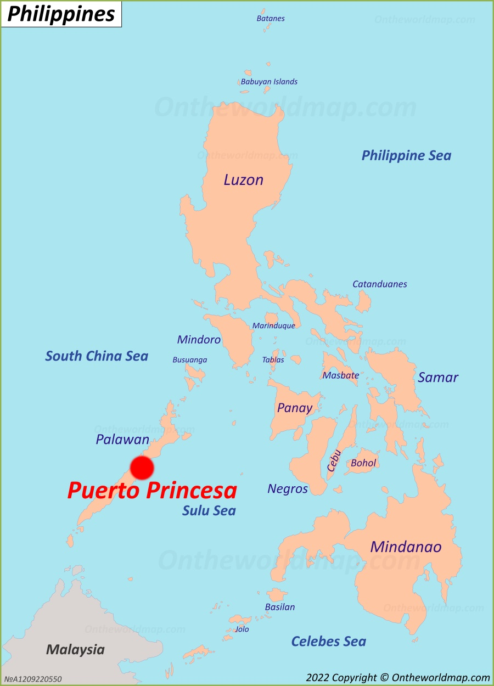

Explore Puerto Princesa
Welcome to the "City in a Forest," a tropical paradise known for its breathtaking landscapes, rich culture, and vibrant attractions. Our site is to guide you through the most beautiful destinations in Puerto Princesa, Palawan.
Discover natural wonders, cultural landmarks, travel tips, and visitor experiences to help you plan the perfect adventure!